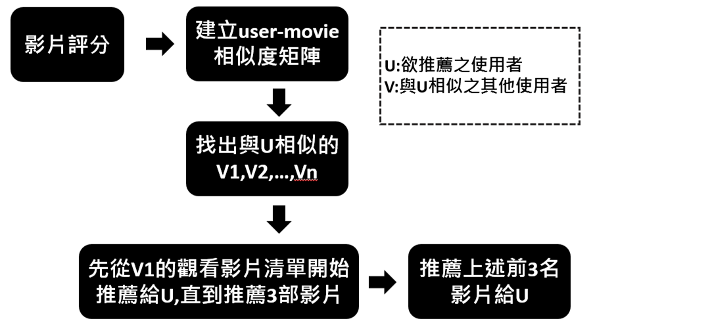
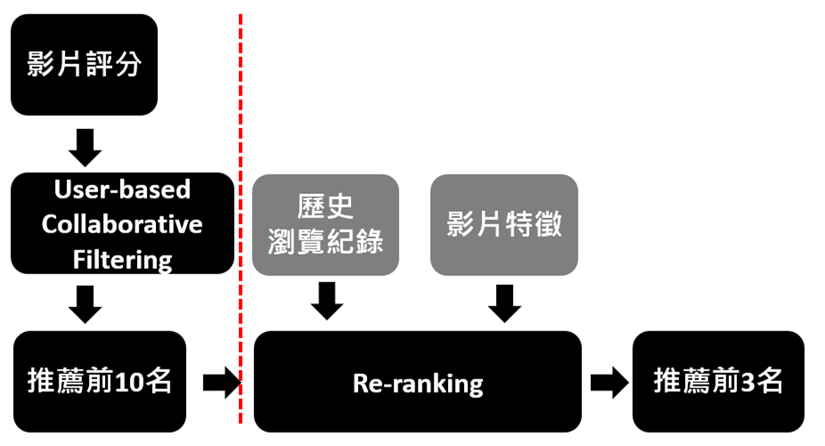
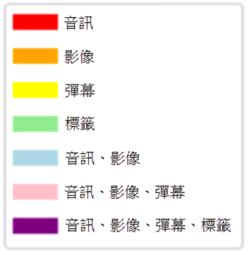
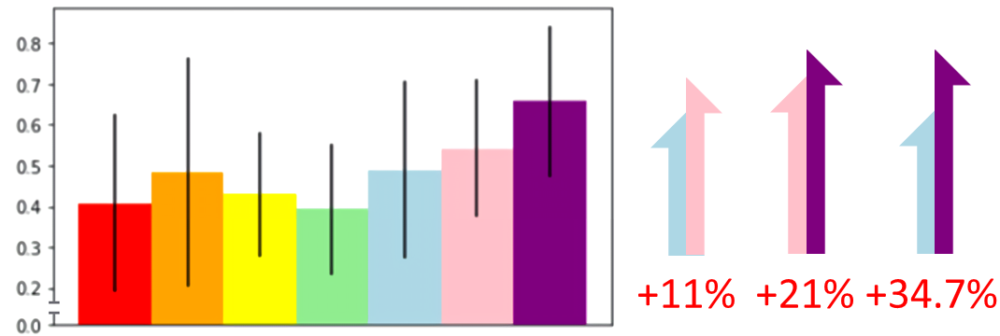
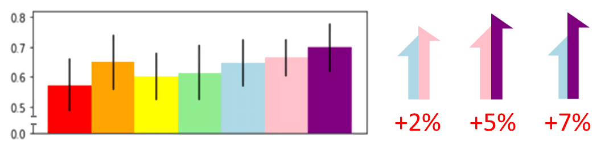

1.View:使用 HTML/CSS/JavaScript 實作使用者介面。
2.Model:使用 Python 實作推薦系統模型。
i.影像:使用 OpenCV 擷取影像特徵。
ii.音訊:使用 Librosa 擷取音訊特徵。
iii.字幕:使用 Jieba 進行斷詞與詞頻分析。
3.Controller:使用 PHP 實作View與Model之間的溝通。
4.Database:使用 MySQL 實作建立使用者的基本資料與紀錄使用者對影片之評分。
5.Data Visualization:使用 Python Matplotlib 繪製折線圖、直方圖、變異數、標準差。
影音平台日漸興盛，影片種類繁多，影片內容也因此分眾化，然而現今各大影音平台對於分眾化影片的推薦模式並不完善。
是以我們的專題將探討在既有的推薦系統上，加入最大的中文二創影音平台──bilibili特有的彈幕文字與自彈幕衍生出的標籤作為特徵
，對於推薦結果所能帶來的影響。
推薦系統
i.非個人化推薦流程：
ii.使用者協同過濾推薦流程：

iii.情境感知推薦流程：

優化既有特徵擷取：
i.彈幕：
彈幕是使用者觀看影片後立即的回饋，因此彈幕比台詞對用戶更具代表性。
ii.標籤：
標籤是衍生自彈幕，將使用者回饋做第二次的淬鍊。

優化既有推薦方法（比較precision）：
i.非個人化推薦：新增彈幕和標籤特徵比較影片相似度再進行推薦。

ii.個人化推薦：在使用者協同過濾上，新增彈幕和標籤特徵重新排序再進行推薦。

專題題目鎖定了目前較少相關研究的領域，以與二次元主題相關的影片做為實作範圍，
針對影像色彩分布、音訊特徵與彈幕特徵相似度去分析，藉由加入彈幕與標籤使得推薦效果有顯著提升。